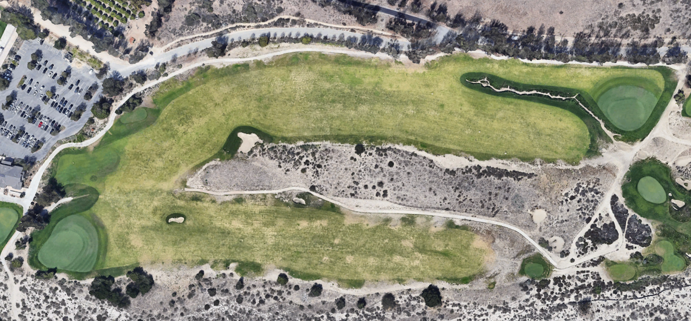
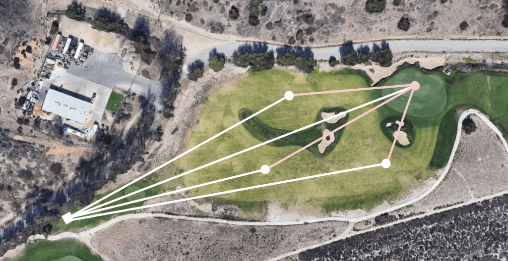
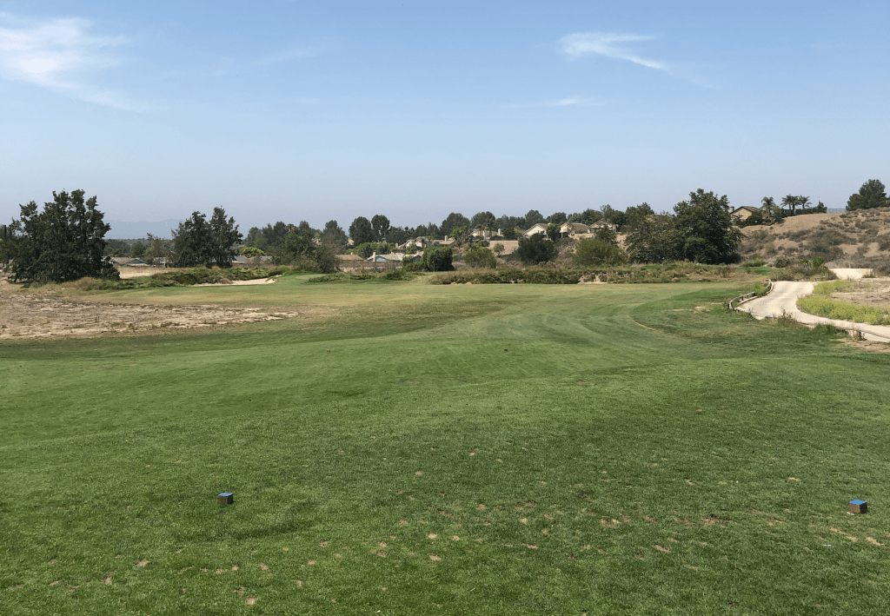
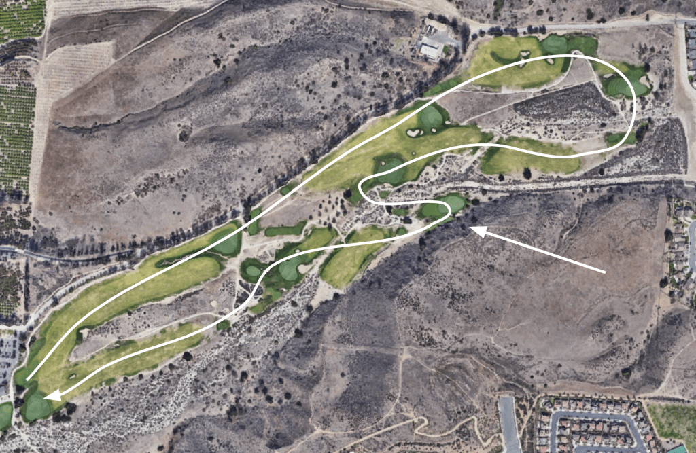
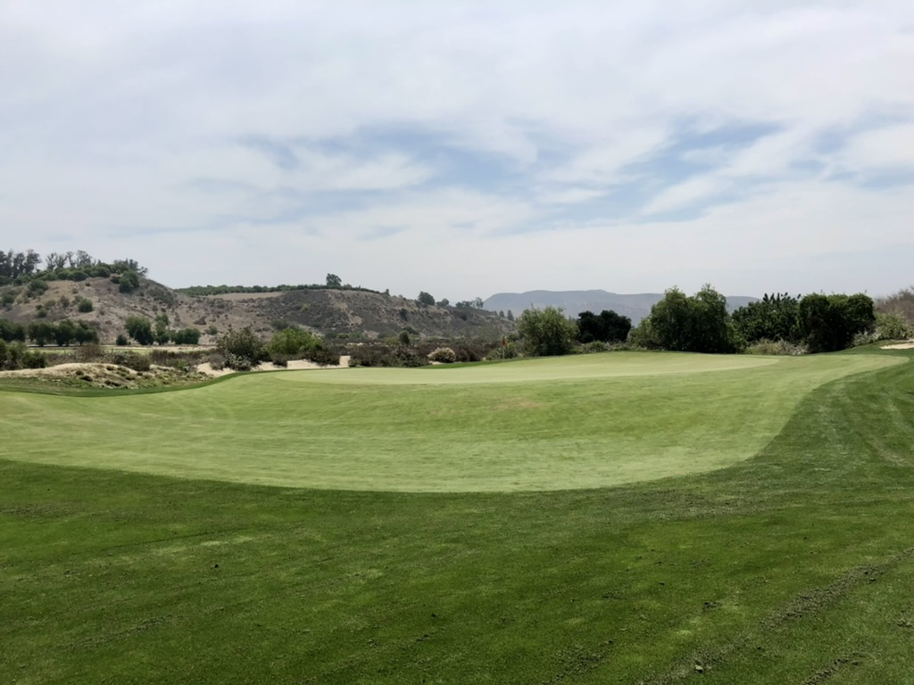
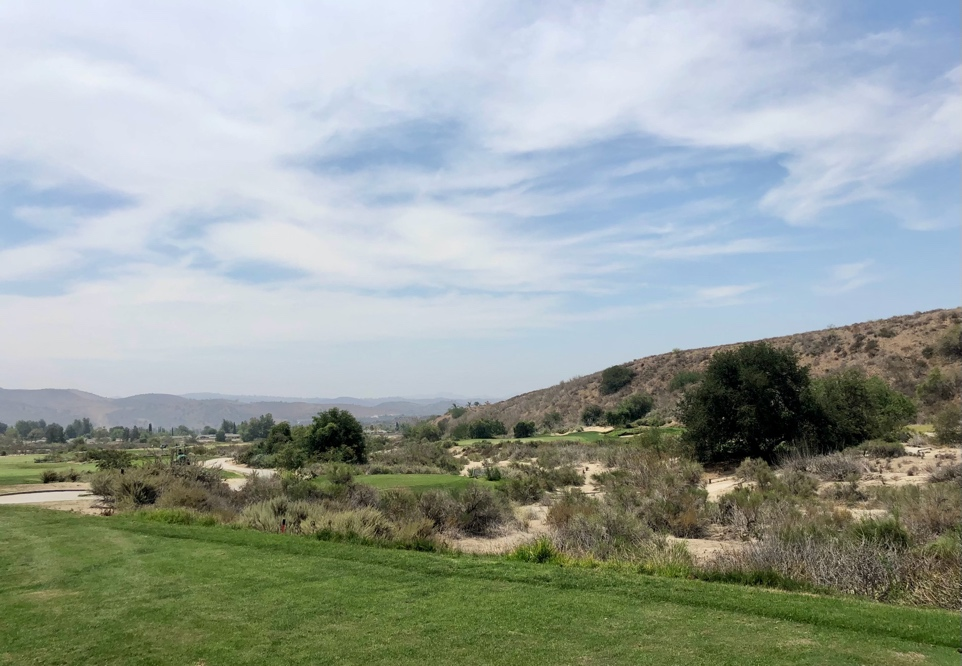
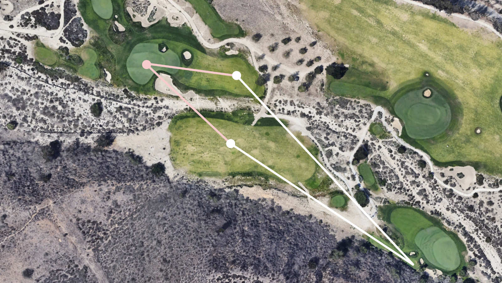
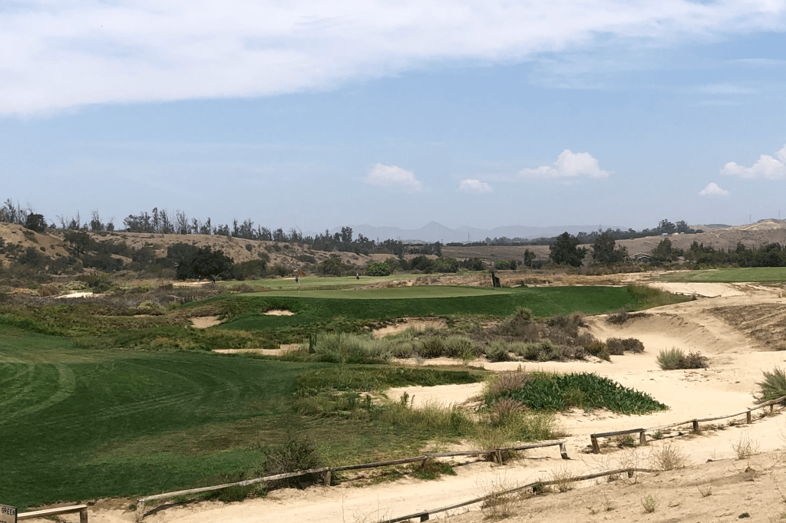
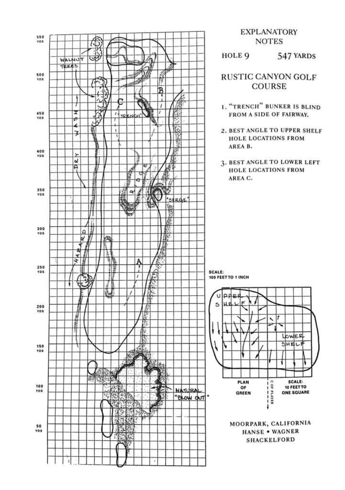

An Appreciation of Rustic Canyon's Front Nine

Often golfers become so overwhelmed by standout holes on a course that they lose appreciation for the more subtle ones. This phenomenon often occurs with the opinions of Rustic Canyon.
Though the back nine at Rustic traverses over the more compelling ground and is often the more heralded nine, the front is certainly no pushover. Indeed, there are few better examples of what intelligent, intricate and engaging architecture can accomplish on a relatively unassuming site.
The Appetizer
The first hole on any golf course should exist in the same manner as an opening shot in a film or the first track on an album — they should capture the viewer’s attention and set the tone for the rest of the experience. There should also exist subtle glimpses of what is to come while providing the remaining songs (or holes) a chance to build in intensity.
The first at Rustic does just this.

An aerial view of the 1st, with the 9th below (courtesy Google Earth images)
A 60-yard wide fairway provides comfort on the tee shot, but skilled players must consider which side they place their aim. A skillfully shaped natural barranca runs up the left and across the front of the green, increasing the difficulty of approach shots from the right side of the fairway. The second shot is just as captivating, as players must consider two options: lay up short of the green and pitch over the barranca — or shoot over the barranca in hopes to reach the green in two. This hole is a delight to begin the round especially because it encapsulates the natural, gentle, and enticing style of design that will soon follow.
Strategy, etc.
The second continues to ask stimulating strategic questions to begin the round. There is plenty of space to miss right in the double fairway (with hole five), but players who traverse further away will face difficulties on their second shot. A semi-blind approach and a right-to-left sloping green await those unwilling to challenge the O.B. off the tee. Akin to the first hole, the second is an easy bogey for those who play safe. However, players that challenge the hazards will either be considerably rewarded or punished by the result. Strategic Golf 101.
As if there wasn’t enough intrigue in the first two holes, the tee shot on the third poses the most baffling choice yet.

An aerial of the third hole with various strategic options overlaid (courtesy Google Earth images)
Though the third is only about 315 yards from the tips, the deep bunkers and run-off surrounding the green entice the golfer to lay up. But where to? An iron to the left of the centerline bunkers requires precision to avoid the O.B. left, but the reward is an open approach. Less trouble appears right of the centerline bunkers, but a group of three bunkers (in Principal’s Nose fashion) create a semi-blind approach into a shallow green with deep bunkers behind.
As the routing turns back north towards the clubhouse, the long par-three fourth nestles itself near the dry wash that runs through the center of the course. The green is wild in contour, coupled with the difficulty of a blind tee shot fronted by deception bunkers. An expanse of sand and brush awaits shots that travel too far, giving the advantage to players that stay below the hole.

The blind tee shot into the par-three fourth
An Aesthetic Appreciation
The fifth is the first of two holes on the front that feature a split fairway intersected by the wash. The green features a sharp fall-off left of the green, with tightly-mowed grass on all sides of the green. This expanse of short grass provides myriad potential options for play. One can putt, chip with a mid-iron, bank a wedge into the side – the shot-making potential is unlimited.
It is to Rustic’s great benefit that short grass surrounds many other greens throughout the course. Nearly every green features an enveloping fairway maintained at a similar height and firmness as the green. Though Rustic Canyon is not a “true links”, these run-off areas imitate many of the conditions found overseas, forcing golfers to think first and then execute.
The Switch in the Routing
Like the back, the holes on the front run out and back between two shrub-covered hills, bisected by the dry wash. Two holes share a fairway, and the others run parallel.

The turn in the routing at the sixth delivers an exciting change (courtesy Google Earth images)

The swale fronting the 6th green

The view from the 6th tee
A brilliant feature of the front’s routing appears at the par-three 6th hole. After the routing turns and moves back north, the fifth proceeds to cross back over the dry wash — this allows the sixth to reverse direction and play into the hillside. The resulting navigational interest is met with a brilliant green complex featuring a pseudo-biarritz-redan design. The green encourages run-up shots to traverse the gully in front of the green and then fall to pin positions on the left. Hanse and Shackelford deserve the highest commendation for implementing this natural swale with such beauty and interest!
A Riveting Return
Whereas the fifth forces players to cross the dry wash on their second shot, the par-four seventh provides long-hitters a chance to carry the wash on their drive to set up an easier approach. For those who lack the initial bravery, a layup precedes an approach over a greenside bunker to a green with runoff and a bunker behind. The principle of delayed penalty strikes again!

An aerial view of the seventh hole, overlaid with various strategic options (courtesy Google Images)
The penultimate hole of the front nine is a superb short par-3, and it offers one of the most thrilling shots on the course. The dramatic internal green contours force skilled players to consider where to place their tee shot within the green — while high handicappers must try their best to reach and hold it. Not only does the hole provide strategic interest for all players in this manner, but it is visually just as captivating. According to Geoff Shackelford, this green site required the most earthwork of all the greens on the course. Nonetheless, the intimidating built-up green blends beautifully with its surroundings, as it ties the higher ground right seamlessly into the green contouring.

The imposing nature of the short eighth
After the third par-three on the nine concludes, the long ninth returns to the clubhouse in a pleasant fashion. Though the tee shot is narrow, the second shot provides fascinating options dependent on the day’s pin location. As shown in the drawing below, players must consider where to leave their second shot while navigating the covert “trench” bunker. This par-five winds through the native areas, and incorporates preexisting native features into the design — most notably in the large slope on the front of the green.

A drawing of the ninth by Gil Hanse from Geoff Shackelford’s book, Grounds for Golf (2003)
From start to finish, the front is enthralling when revisited closely. Of course, the front nine is not as dramatic as many other top-tier courses in America; however, dramatic does not always equal exciting. Oftentimes, it is simply the subtle secrets and modest reservations that make a masterpiece.
Concluding Thoughts on “Value”
Many have written about the near-implausible value of playing a round at Rustic Canyon. And for good reason – Rustic is undoubtedly one of the best values in America for its price. However, many overlook the true merit of Rustic’s design in the constant praise of its price.
Often the hype surrounding a “hidden gem” is based firstly upon the price of the course and the good architecture that happens to follow. This order matters, as the applause would appear less significant if not for the price. There is nothing inherently wrong with an unadorned appreciation for a cheap steal; however, these courses are often subconsciously known to be worse than the public rave.
But let it be known, though Rustic Canyon is rightfully included in every “best value” list, it is a world-class course in its own right. In a typical discussion of its merits, many begin their compliments with back-nine commentary while the front is sidelined. Notwithstanding, if any lesson is to be acquired from Rustic, it is that the subdued is often the more sublime. Though the canvas was arguably less tantalizing than others, the creation was to a greater degree terrific.